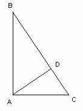

Para el aula
Problema 283
18.26 Un cateto de un triángulo rectángulo mide
1. La proyección del cateto sobre la hipotenusa (CD)
2. La proyección del otro cateto sobre la hipotenusa (BD)
3. El otro cateto (AB)
4. El área del triángulo
Lazcano, I. Barolo, P. (1991):
Matemáticas 7º EGB. Edelvives. Zaragoza (pag 165)
Solución:

Solución de Maite Peña Alcaraz, estudiante de Industriales
en la Universidad de Comillas (Madrid).
Sabemos
que AC=30cm, AD=24cm. Por el teorema de Pitágoras, CD=. Por otro lado, los triángulos ADC y BDA son semejantes
porque tienen los tres ángulos iguales. Por tanto usando Thales
obtenemos que BD=32cm, y por tanto AB=40cm usando el teorema de Pitágoras de
nuevo y por tanto el área del triángulo valdría [ABC]=600cm2.